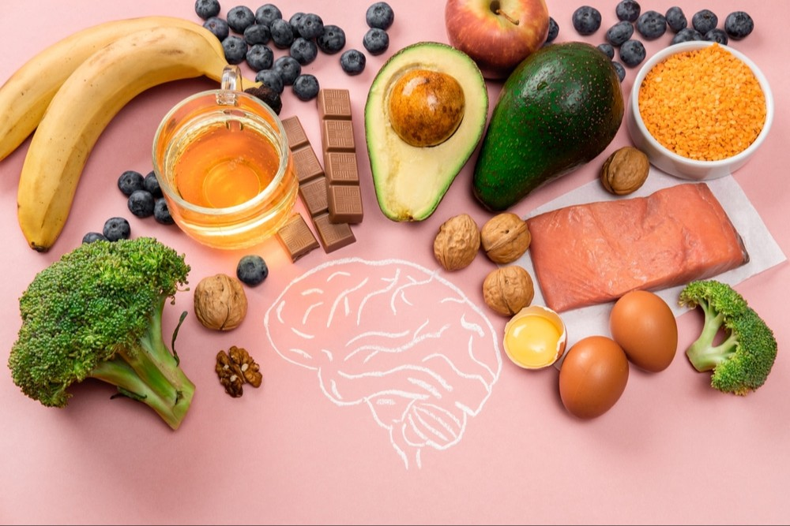
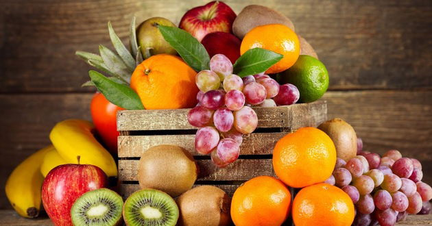
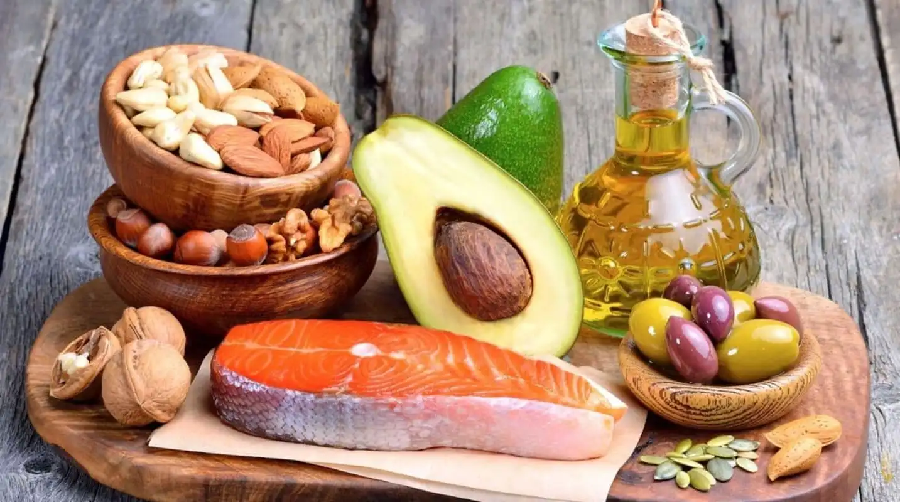

Quais são os Pilares
de uma alimentação
equilibrada?
Os três pilares de uma alimentação equilibrada são qualidade, quantidade e variedade, porém também podemos manter em nossa mente a necessidade de certos elementos para uma alimentação saudável:
-
1. Priorize alimentos de verdade
A frase “Priorize alimentos de verdade” refere-se a um alimento que não atende apenas às nossas necessidades nutricionais, ou seja, alimentos naturais, integrais ou minimamente processados.
Por isso, sempre que possível, opte por alimentos como: legumes, verduras, carnes, frutas, castanhas, entre muitas outras opções.
A Dra. Elisabetta Recine, nutricionista, docente e coordenadora do Observatório de Políticas de Segurança Alimentar e Nutrição da Universidade de Brasília (UnB), explicou que a tradução popular da “comida de verdade” é apenas ter uma alimentação saudável.
 -
2. Valorize os alimentos de origem vegetal
Alimentos de origem vegetal são frutas, legumes, verduras, cereais e azeites. Eles são ricos em vitaminas, minerais, fibras e antioxidantes, e fazem toda a diferença para a saúde do organismo.
 -
3. Consuma gorduras boas
Consumir gorduras boas, também conhecidas como gorduras insaturadas, é fundamental para a saúde.
“As gorduras “boas” melhoram a circulação, fortalece o sistema imunológico e possuem ação anti-inflamatória e antioxidante, ajudando a prevenir doenças como infarto, aterosclerose, diabetes e trombose” - Dra. Tatiana Zanin, nutricionista.
Essas gorduras são encontradas em alimentos como abacate, azeite de oliva, peixes como salmão e sardinha, oleaginosas como nozes e castanhas, sementes como chia e linhaça, e até mesmo em chocolate amargo.
 -
4. Tenha equilíbrio na quantidade calórica
Para que haja o equilíbrio calórico é ideal que a quantidade que você consome de calorias seja praticamente igual à que você gasta.
Por exemplo, alguns alimentos podem possuir muitas calorias e poucos nutrientes benéficos para o organismo, como é o caso de muitos ultraprocessados.

-
5. Beba água
É de extrema importância beber água todos os dias. A água ajuda a melhorar as funções básicas do nosso corpo, por isso o recomendado é beber de 1,5 a 2 litros de água por dia.

“Os benefícios da água para a saúde incluem ajudar a regular a temperatura corporal, melhorar a circulação de sangue, regular o sistema imunológico, ajudar na digestão e promover a desintoxicação natural do organismo.” - Dra. Karla Leal , nutricionista.
Principalmente quando você está emagrecendo, pois a água ajuda a diminuir a vontade de comer, porém muitas vezes o nosso corpo confunde a sede com a fome.
Quando você não toma a quantidade de água que seu corpo precisa, você pode ficar desidratado, veja alguns sintomas:
- Tontura
- Fraqueza
- Mal - estar
- Desmaio
- Pele Seca
Quer saber mais? Acesse:
Comida de verdade13 alimentos ricos em gorduras boas
Conheça os principais pilares de uma boa alimentação
Por que a água é tão importante para a saúde?